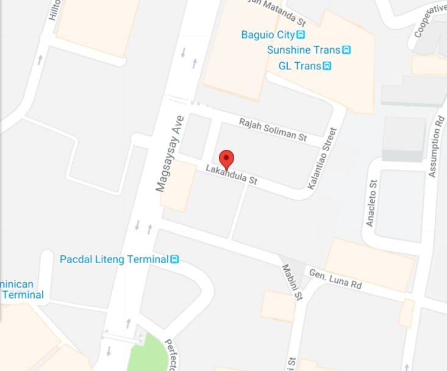

The Laperal White House
The white Victorian house, originally owned by the Laperal family, stands at the right side of Leonard Wood Road in Baguio City, just before the Teacher’s Camp, when going to Mines View Park. It was built in the year 1920. During World War II, it was used as a garrison by the Japanese. Beheading of men suspected to be spies was said to have taken place inside the house, and women were raped in the rooms as well. Though Don Roberto, the Laperal family’s patriarch, survived the war, Doña Victorina died. One unfortunate day, Don Roberto slipped at the front yard and bumped his head that caused his death. A granddaughter of Don Roberto and Doña Victorina is also said to have died after being hit by a car upon crossing Leonard Wood road in front of the Laperal White House. The house was originally colored pale yellow, but was painted white after it was bought by business tycoon Lucio Tan. Thus, it was called the White House that is considered a haunted because of stories of ghost sightings on the steps at the porch and the windows of the house. Caretakers live within the perimeters of the property, but not inside the house. Nobody goes inside the house at night, alone.
Carantes Terminal

Lakandula Terminal
-
You may ride:
Mines View Jeep
Liteng Jeep
Navy Base Jeep
Maria Basa Jeep -
Fare rate:
Php 8.50